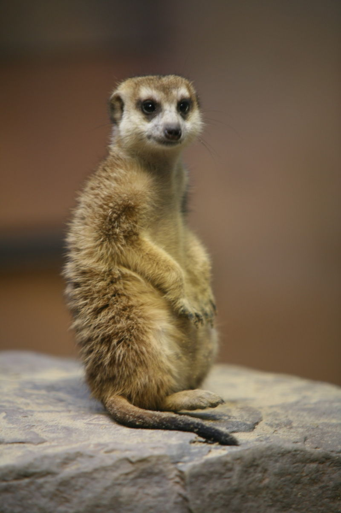

Surikata (také hrabačka surikata, promyka surikata, Suricata suricatta) je drobná denní, pospolitě žijící promykovitá šelma. Název surikata má původ ve francouzštině, kde souris-chat znamená něco jako „myšokočka“. Anglický název meerkat pochází z afrikánštiny, kde se nazývá mierkat, doslova „mravenčí kočka“, zřejmě proto, že ráda obývá opuštěná termitiště.
| Hmotnost: | 600 až 975 g |
|---|---|
| Délka těla: | 25 až 35 cm |
| Délka ocasu: | 17 až 25 cm |
Na obličeji a na spodu těla jsou surikaty hnědé, svrchu stříbrnohnědé, na hřbetě mají osm tmavších hnědých pruhů, tmavé kroužky kolem očí a tmavou špičku štíhlého ocasu. Surikata má štíhlé, kompaktně stavěné tělo, poměrně velkou hlavu s výraznýma očima, malými boltci a zašpičatělým čenichem, poměrně dlouhý ocas a silné končetiny. Na každé noze má čtyři prsty se silnými drápky, jimiž si vyhrabává doupata a loví potravu. Na rozdíl od ostatních promyk má pouze 36 zubů.

Potrava surikaty je převážně živočišná. Surikaty loví malé savce, plazy (včetně jedovatých hadů), malé ptáky, vybírají ptačí vejce, pochutnají si i na hmyzu, hlavně na sarančatech a termitech, dokážou chytit i motýly. Šikovně chytají a zabíjejí také štíry a velké pavouky, proti jejichž jedu jsou částečně imunní. Nevyhýbají se ani rostlinné potravě: divokým pouštním melounům (Citrullus caffer), plodům narasu, šťavnatým kořenům, hlízkám a cibulkám pouštních rostlin. Jejich oblíbenou potravou jsou i podzemní plodnice houby Kalaharituber pfeilli, podobné lanýžům. V zajetí rády žerou i ovoce a zeleninu.
Pro svou čilost, roztomilost a poměrně snadný chov se surikata stala velmi oblíbeným a častým chovancem zoo. V rámci Evropy se jedná přibližně o 500 zařízení. V Česku se jedná o většinu tradičních zoologických zahrad: